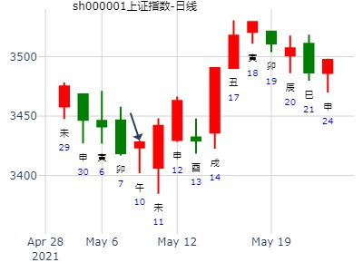
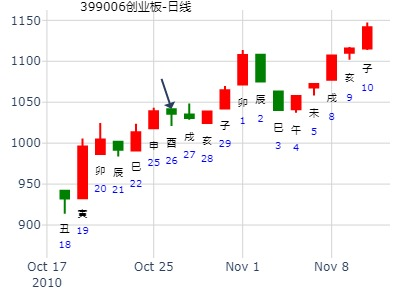

占事：占中兴通讯2015年全年行情如何？ 阿晖
公历起卦时间：2015年1月13日11时52分 (在线摇卦)
干支：甲午年 丁丑月 己丑日 庚午时 （日空：午未）
兑宫：雷泽归妹 (归魂) 兑宫：雷泽归妹 (归魂)
六神 伏神 本 卦 变 卦
勾陈 父母庚戌土 ▅▅ ▅▅ 应 父母庚戌土 ▅▅ ▅▅ 应
朱雀 兄弟庚申金 ▅▅ ▅▅ 兄弟庚申金 ▅▅ ▅▅
青龙 子孙丁亥水 官鬼庚午火 ▅▅▅▅▅ 官鬼庚午火 ▅▅▅▅▅
玄武 父母丁丑土 ▅▅ ▅▅ 世 父母丁丑土 ▅▅ ▅▅ 世
白虎 妻财丁卯木 ▅▅▅▅▅ 妻财丁卯木 ▅▅▅▅▅
腾蛇 官鬼丁巳火 ▅▅▅▅▅ 官鬼丁巳火 ▅▅▅▅▅
预测下周股市如何（2月28日，3月1，2，3，4日）大盘走势
公历时间：2011年 2月24日 10时5分
干支： 辛卯年 庚寅月 庚戌日 辛巳时 (旬空：寅卯)
兑宫：雷泽归妹(归魂)
六神 伏 神 【本 卦】
螣蛇 父母庚戌土 ━ ━ 应
勾陈 兄弟庚申金 ━ ━
朱雀 子孙丁亥水 官鬼庚午火 ━━━
青龙 父母丁丑土 ━ ━ 世
玄武 妻财丁卯木 ━━━
白虎 官鬼丁巳火 ━━━
占事：金玉堂问2019年己亥年股市
时间: 2019-02-05 7时46分
干支: 己亥年丙寅月癸酉日 (旬空: 戌亥 )
归妹静卦
(归魂)
白虎 ▅▅ ▅▅ 父母戌土 应
腾蛇 ▅▅ ▅▅ 兄弟申金
勾陈 子孙亥水▅▅▅▅▅ 官鬼午火
朱雀 ▅▅ ▅▅ 父母丑土 世
青龙 ▅▅▅▅▅ 妻财卯木
玄武 ▅▅▅▅▅ 官鬼巳火
试测上证3.1戊申一-3.5壬子五哪日顶？
公历起卦时间：2021年2月28日15时14分 (电脑自动)
干支：辛丑年 庚寅月 丁未日 戊申时 （日空：寅卯）
神煞：驿马－巳 桃花－子 日禄－午 贵人－酉，亥
兑宫：雷泽归妹 (归魂)
六神 伏神 本 卦
青龙 父母庚戌土 ▅▅ ▅▅ 应
玄武 兄弟庚申金 ▅▅ ▅▅
白虎 子孙丁亥水 官鬼庚午火 ▅▅▅▅▅
螣蛇 父母丁丑土 ▅▅ ▅▅ 世
勾陈 妻财丁卯木 ▅▅▅▅▅
朱雀 官鬼丁巳火 ▅▅▅▅▅
2022年2月23日22时15分 (在线摇卦)
占事：上海贝岭600171寅卯辰3个月K走势？
干支：壬寅年 壬寅月 丁未日 辛亥时 （日空：寅卯）
兑宫：雷泽归妹 (归魂) 兑宫：雷泽归妹 (归魂)
六神 伏神 本 卦 变 卦
青龙 父母庚戌土 ▅▅ ▅▅ 应 父母庚戌土 ▅▅ ▅▅ 应
玄武 兄弟庚申金 ▅▅ ▅▅ 兄弟庚申金 ▅▅ ▅▅
白虎 子孙丁亥水 官鬼庚午火 ▅▅▅▅▅ 官鬼庚午火 ▅▅▅▅▅
螣蛇 父母丁丑土 ▅▅ ▅▅ 世 父母丁丑土 ▅▅ ▅▅ 世
勾陈 妻财丁卯木 ▅▅▅▅▅ 妻财丁卯木 ▅▅▅▅▅
朱雀 官鬼丁巳火 ▅▅▅▅▅ 官鬼丁巳火 ▅▅▅▅▅
马后炮：世爻日破。财爻虽旺却旬空无用。
占事：3月21-25大盘涨跌？
公历起卦时间：2011年3月18日15时12分 (手工指定)
干支：辛卯年 辛卯月 壬申日 戊申时 （日空：戌亥）
神煞：驿马－寅 桃花－酉 日禄－亥 贵人－卯，巳
兑宫：雷泽归妹 (归魂) 兑宫：雷泽归妹 (归魂)
六神 伏神 本 卦 变 卦
白虎 父母庚戌土 ▅▅ ▅▅ 应 父母庚戌土 ▅▅ ▅▅ 应
腾蛇 兄弟庚申金 ▅▅ ▅▅ 兄弟庚申金 ▅▅ ▅▅
勾陈 子孙丁亥水 官鬼庚午火 ▅▅▅▅▅ 官鬼庚午火 ▅▅▅▅▅
朱雀 父母丁丑土 ▅▅ ▅▅ 世 父母丁丑土 ▅▅ ▅▅ 世
青龙 妻财丁卯木 ▅▅▅▅▅ 妻财丁卯木 ▅▅▅▅▅
玄武 官鬼丁巳火 ▅▅▅▅▅ 官鬼丁巳火 ▅▅▅▅▅
占事：中国石化近3-4个月走势？
公历起卦时间：2017年4月20日11时55分 (在线摇卦)
干支：丁酉年 甲辰月 丁丑日 丙午时 （日空：申酉）
兑宫：雷泽归妹 (归魂) 兑宫：雷泽归妹 (归魂)
六神 伏神 本 卦 变 卦
青龙 父母庚戌土 ▅▅ ▅▅ 应 父母庚戌土 ▅▅ ▅▅ 应
玄武 兄弟庚申金 ▅▅ ▅▅ 兄弟庚申金 ▅▅ ▅▅
白虎 子孙丁亥水 官鬼庚午火 ▅▅▅▅▅ 官鬼庚午火 ▅▅▅▅▅
腾蛇 父母丁丑土 ▅▅ ▅▅ 世 父母丁丑土 ▅▅ ▅▅ 世
勾陈 妻财丁卯木 ▅▅▅▅▅ 妻财丁卯木 ▅▅▅▅▅
朱雀 官鬼丁巳火 ▅▅▅▅▅ 官鬼丁巳火 ▅▅▅▅▅
2019年5月26日，上证到6月底。归妹静卦。
时间: 2019-05-26 23时10分
按晚子时是：
干支：己亥年己巳月甲子日甲子时（日空:戌亥）
备用干支2: 己亥年己巳月癸亥日 (旬空: 子丑 )
归妹静卦
(归魂)
白虎 ▅▅ ▅▅ 父母戌土 应
腾蛇 ▅▅ ▅▅ 兄弟申金
勾陈 子孙亥水▅▅▅▅▅ 官鬼午火
朱雀 ▅▅ ▅▅ 父母丑土 世
青龙 ▅▅▅▅▅ 妻财卯木
玄武 ▅▅▅▅▅ 官鬼巳火
整体：亥子寅卯日是涨。
主帖标题: 上证5.10收盘走势
公历起卦时间：2021年5月9日9时7分 (电脑自动)
干支：辛丑年 癸巳月 丁巳日 乙巳时 （日空：子丑）
神煞：驿马－亥 桃花－午 日禄－午 贵人－酉，亥
兑宫：雷泽归妹 (归魂) 兑宫：雷泽归妹 (归魂)
六神 伏神 本 卦 变 卦
青龙 父母庚戌土 ▅▅ ▅▅ 应 父母庚戌土 ▅▅ ▅▅ 应
玄武 兄弟庚申金 ▅▅ ▅▅ 兄弟庚申金 ▅▅ ▅▅
白虎 子孙丁亥水 官鬼庚午火 ▅▅▅▅▅ 官鬼庚午火 ▅▅▅▅▅
螣蛇 父母丁丑土 ▅▅ ▅▅ 世 父母丁丑土 ▅▅ ▅▅ 世s
勾陈 妻财丁卯木 ▅▅▅▅▅ 妻财丁卯木 ▅▅▅▅▅
朱雀 官鬼丁巳火 ▅▅▅▅▅ 官鬼丁巳火 ▅▅▅▅▅
世爻旬空，未日被冲实，大涨？子孙爻日破月破，弱极？

主帖标题: 6.2辛巳三-6.4癸未北方华创何时顶？底部？
6.2辛巳三-6.4癸未北方华创何时顶？
公历起卦时间：2021年6月2日14时45分 (电脑自动)
干支：辛丑年 癸巳月 辛巳日 乙未时 （日空：申酉）
神煞：驿马－亥 桃花－午 日禄－酉 贵人－寅，午
兑宫：雷泽归妹 (归魂) 兑宫：雷泽归妹 (归魂)
六神 伏神 本 卦 变 卦
螣蛇 父母庚戌土 ▅▅ ▅▅ 应 父母庚戌土 ▅▅ ▅▅ 应
勾陈 兄弟庚申金 ▅▅ ▅▅ 兄弟庚申金 ▅▅ ▅▅
朱雀 子孙丁亥水 官鬼庚午火 ▅▅▅▅▅ 官鬼庚午火 ▅▅▅▅▅
青龙 父母丁丑土 ▅▅ ▅▅ 世 父母丁丑土 ▅▅ ▅▅ 世
玄武 妻财丁卯木 ▅▅▅▅▅ 妻财丁卯木 ▅▅▅▅▅
白虎 官鬼丁巳火 ▅▅▅▅▅ 官鬼丁巳火 ▅▅▅▅▅

占事：午月上证指数--金玉堂
时间: 2021-06-06 14时17分 周日
干支: 辛丑年甲午月乙酉日癸未时 (旬空: 午未 )
归妹静卦
(归魂)
玄武 ▅▅ ▅▅ 父母戌土 应
白虎 ▅▅ ▅▅ 兄弟申金
腾蛇 子孙亥水▅▅▅▅▅ 官鬼午火
勾陈 ▅▅ ▅▅ 父母丑土 世
朱雀 ▅▅▅▅▅ 妻财卯木
青龙 ▅▅▅▅▅ 官鬼巳火
马后炮：子孙妻财都不得日月。虽然官鬼空也不顶用。
主帖标题: 小盘逆势走强？！30*本周将逆势上涨10%，攻上26元？！请各位道友一同研究！！
出生：197 年 性别：男 占事：30****本周能站上26元吗
公历起卦时间：2010年10月26日11时51分 (在线摇卦)
干支：庚寅年 丙戌月 己酉日 庚午时 （日空：寅卯）
神煞：驿马－亥 桃花－午 日禄－午 贵人－子，申
兑宫：雷泽归妹 (归魂) 兑宫：雷泽归妹 (归魂)
六神 伏神 本 卦 变 卦
勾陈 父母庚戌土 ▅▅ ▅▅ 应 父母庚戌土 ▅▅ ▅▅ 应
朱雀 兄弟庚申金 ▅▅ ▅▅ 兄弟庚申金 ▅▅ ▅▅
青龙 子孙丁亥水 官鬼庚午火 ▅▅▅▅▅ 官鬼庚午火 ▅▅▅▅▅
玄武 父母丁丑土 ▅▅ ▅▅ 世 父母丁丑土 ▅▅ ▅▅ 世
白虎 妻财丁卯木 ▅▅▅▅▅ 妻财丁卯木 ▅▅▅▅▅
腾蛇 官鬼丁巳火 ▅▅▅▅▅ 官鬼丁巳火 ▅▅▅▅▅
注：没有股票名，以创业板代替，仅供参考。

创业板下周1021-1025日-金玉堂
时间: 2024-10-18
干支: 甲辰年甲戌月乙卯日 (旬空: 子丑 )
归妹静卦(归魂)
玄武 ▅▅ ▅▅ 父母戌土 应
白虎 ▅▅ ▅▅ 兄弟申金
腾蛇 子孙亥水▅▅▅▅▅ 官鬼午火
勾陈 ▅▅ ▅▅ 父母丑土 世
朱雀 ▅▅▅▅▅ 妻财卯木
青龙 ▅▅▅▅▅ 官鬼巳火
主帖标题: 未来房价走势预测
转一个贴：
股市到2011年见底。那房市未来怎样的情形呢？望各路人士帮忙解解。
主题：11年内中国房价
戊子 癸亥 癸酉 庚申 (戌亥空) 戊子年±月初二(2008/11/29 16:27:35)
雷泽归妹
白虎 父母戌土 ∥ 应
腾蛇 兄弟申金 ∥
子孙亥水：勾陈 官鬼午火 ／
朱雀 父母丑土 ∥ 世
青龙 妻财卯木 ／
玄武 官鬼巳火 ／
原帖由 sky999 于 2009-6-10 22:53 发表
2011年开始，房价一路涨起来，而且是在一片看空声中涨起来的，10年中不断创历史新高。
马后炮：卯木暗动。涨。
主帖标题: 第十九期上证指数预测比赛12月1日到5日
起卦方式：手动摇卦 www.iqing.net 线上排盘系统
公历时间：2008年11月29日16时25分 星期六
干支：戊子年 癸亥月 癸酉日 庚申时 (旬空：戌亥)
神煞：驿马—亥 桃花—午 日禄—子 贵人—卯，巳
兑宫：雷泽归妹（归魂）
六神 伏 神 【本 卦】
白虎 ▅▅ ▅▅ 父母庚戌土 应
螣蛇 ▅▅ ▅▅ 兄弟庚申金
勾陈 子孙丁亥水 ▅▅▅▅▅ 官鬼庚午火
朱雀 ▅▅ ▅▅ 父母丁丑土 世
青龙 ▅▅▅▅▅ 妻财丁卯木
玄武 ▅▅▅▅▅ 官鬼丁巳火
这是摇卦的信息!
马后炮：同前卦房地产走向一样，财爻暗动。
男 占事: 本周大盘
起卦方式：手动摇卦 周易天地线上排盘系统
公历时间：2014年11月7日15时7分
干支：甲午年 甲戌月 壬午日 戊申时
旬空：辰巳 申酉 申酉 寅卯
神煞：驿马─申 桃花─卯 日禄─亥 贵人─巳，卯
兑宫：雷泽归妹（归魂）
六神 伏 神 【本 卦】
白虎 ▄▄ ▄▄ 父母庚戌土 应
螣蛇 ▄▄ ▄▄ 兄弟庚申金
勾陈 子孙丁亥水 ▄▄▄▄▄ 官鬼庚午火
朱雀 ▄▄ ▄▄ 父母丁丑土 世
青龙 ▄▄▄▄▄ 妻财丁卯木
玄武 ▄▄▄▄▄ 官鬼丁巳火
酉日又冲卯木（进入流月亥得月生），一般认为是暗动。(大涨）
戌日则是冲完再合，父值日。亥日出伏，涨。子日冲飞露伏，涨。
丑日父值日，又墓兄弟金，小跌。

占事：东方电气最近2周？112122
时间: 2021-11-10 12时36分
干支: 辛丑年己亥月壬戌日丙午时 (旬空: 子丑 )
归妹静卦(归魂)
白虎 ▅▅ ▅▅ 父母戌土 应
腾蛇 ▅▅ ▅▅ 兄弟申金
勾陈 子孙亥水▅▅▅▅▅ 官鬼午火
朱雀 ▅▅ ▅▅ 父母丑土 世
青龙 ▅▅▅▅▅ 妻财卯木
玄武 ▅▅▅▅▅ 官鬼巳火
东方电气2周。2021年11月10日。归妹静卦
马后炮:
子日冲飞露伏，涨。
世爻旬空不担财，卯日财旺反而跌。
未日冲实世爻能担财，才大涨。
羊年大盘走势
起卦公历：2014年12月16日12时47分(北京时间)。
起卦干支： 甲午年 丙子月 辛酉日 甲午时
主变卦 雷泽归妹(兑宫-归魂) 之 雷泽归妹(兑宫) [空亡:子、丑]
腾蛇 ━ ━ 父母辰土 应 ━ ━ 父母辰土 应
勾陈 ━ ━ 妻财寅木 ━ ━ 妻财寅木
朱雀 子孙亥水 ━━━ 子孙子水 ━━━ 子孙子水
青龙 ━ ━ 父母丑土 世 ━ ━ 父母丑土 世
玄武 ━━━ 妻财卯木 ━━━ 妻财卯木
白虎 ━━━ 官鬼巳火 ━━━ 官鬼巳火
主帖标题: 3300840833子月内涨跌 张三汉-补码
占事：实际002602 补码 下周涨跌
公历时间：2021年12月17日15时1分
干 支：辛丑年 庚子月 己亥日 壬申时
旬 空：辰巳 辰巳 辰巳 戌亥
神 煞：驿马─巳 桃花─子 日禄─午 贵人─子，申
兑宫：雷泽归妹（归魂）
六神 伏 神 【本 卦】
勾陈 ▄▄ ▄▄ 父母庚戌土 应
朱雀 ▄▄ ▄▄ 兄弟庚申金
青龙 子孙丁亥水 ▄▄▄▄▄ 官鬼庚午火
玄武 ▄▄ ▄▄ 父母丁丑土 世
白虎 ▄▄▄▄▄ 妻财丁卯木
螣蛇 ▄▄▄▄▄ 官鬼丁巳火